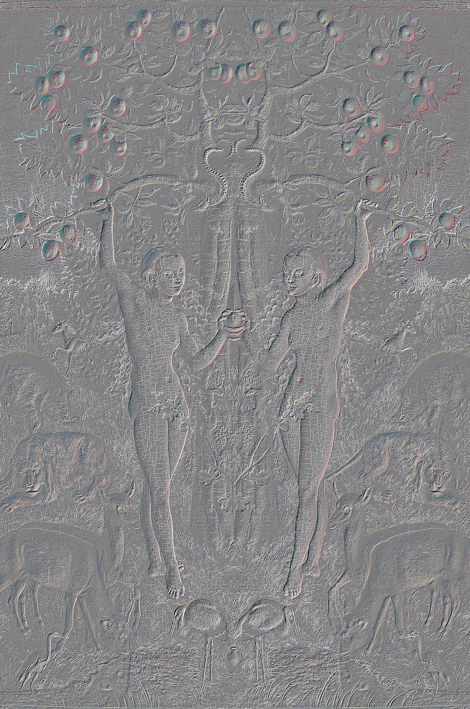

Globe II
EVE

Globe II and EVE was showed as my degree show work from städelschule in 2018. The show was called After Rubens at the Strädel Museeum. Nancy Halt caravan was also parked outside the Museeum, (see Nancy Halt). The print was in the format and material of a lage museeum post card mounted to the wall and the video was showed on a motior to wall.